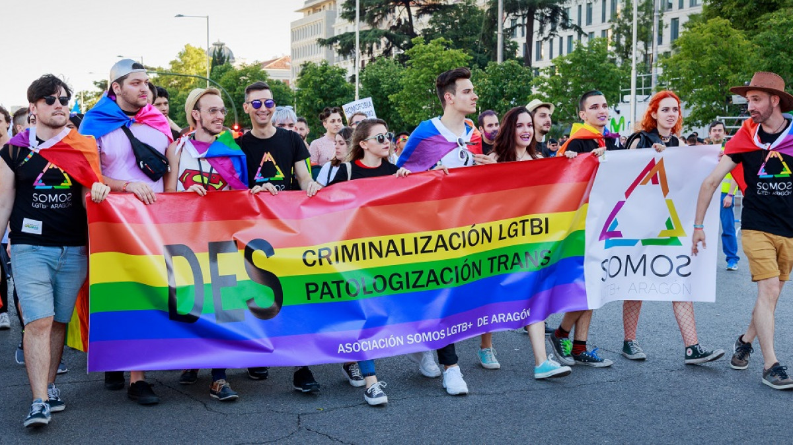

La comunidad lgbtq+ es un grupo de personas que buscan el respeto de las personas y la aceptacion y quieren dejar en claro que son personas como nosotros que solo tienen diferentes espectativas y gustos que ellos no tienen ninguna enfermedad y que no son hijos de el diablo que merecen respeto como nosotros.
El origen de la fecha del Día del Orgullo LGBTTIQ+ se remonta al 28 de junio de 1969 cuando en un bar de Nueva York llamado Stonewall, gays, lesbianas, bisexuales y transexuales, intersexuales, queers (LGBTTIQ+) cansados de los continuos hostigamientos de la policía, decidieron enfrentarla, rebelándose contra un sistema político que avalaba la discriminación, la persecución, el hostigamiento y la violencia sistemática contra la comunidad.
También se suma al reclamo por la no violencia, el respeto de la diversidad sexual, la libertad para decidir sobre el propio cuerpo, el derecho a la identidad, la protección, el reconocimiento de todas las familias y por el pleno acceso a todos los derechos que aseguren la inclusión ciudadana.
La discriminacion que las personas le hacen a los de la comunidad lgbtq a hecho que la taza de suicidio halla aumentado mas en los jovenes ya que una cantidad de jovenes que han salido del closet muchos de los homofobifos de la sociedad han hecho comentarios como que es culpa de ellos por haber salido del closet o que es culpa de los padres por no ponerle limites a sus hijos pero ahi veces que son los mismos padres que generan el suicidio por sus malos comentarios y haciendo que sus inseguridades se activen ademas los de la comunidad lgbtq son los que mejor corazon tienen .
Los heteros que son las personas normales que supuestamente siguen las reglas que Dios creo cuando todos los asesinatos a las personas de esta comunidad son provocados por esas personas que dicen que esto no es de Dios no se supone que la muerte no es de DIOS ,nuestro creador supremo es exelecian y no podemos jugar con su nombre como para juzgar a los demas usando su nombre el unico que puede juzgarlos es el.DIOS fue quien puso esa caracteristica en ellos el año pasado los heteros pidieron y reclamaron que porque no tenian una marcha como los de la comunidad lgbtq los de la comunidad le respondieron que la marcha no es un juego que es para la libertad de los que son excluidos de la sociedad por su genero y gusto sexual que ellos no necesitan una marcha ya que ellos pueden caminar entre todos sin miedo a ser discriminado `